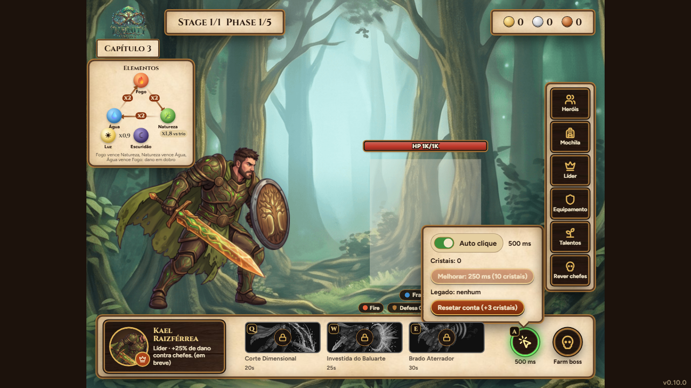
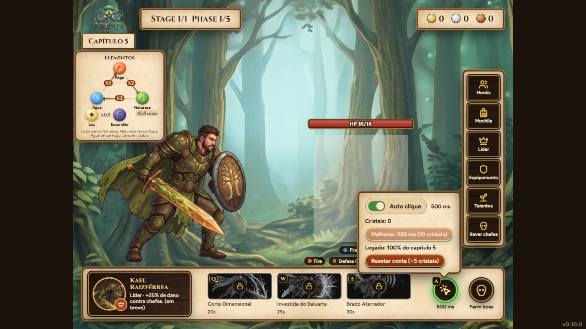
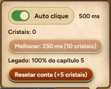
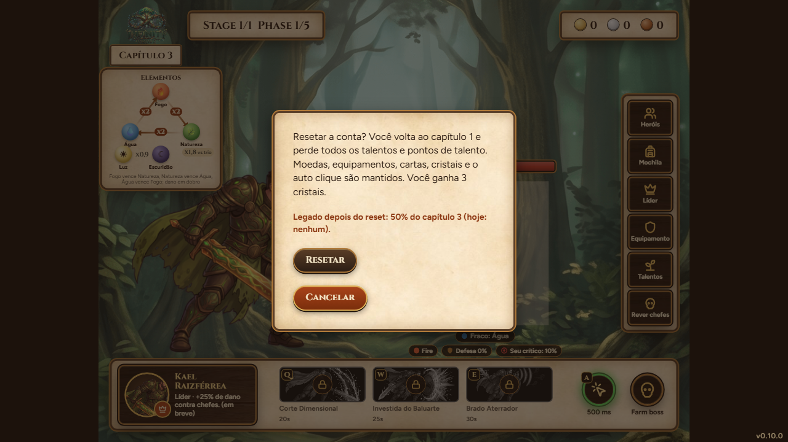
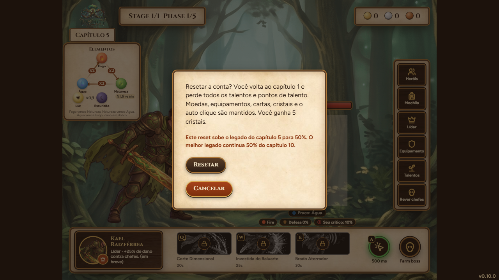
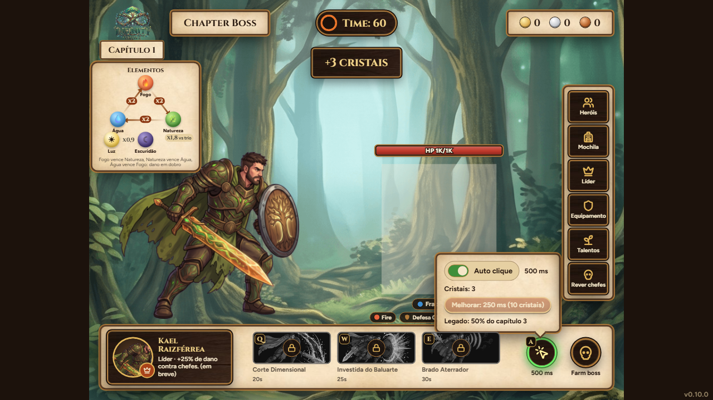
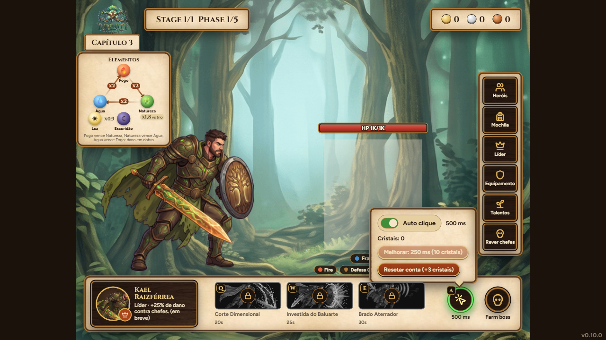

Linhas do legado de reset
Revisão refeita depois do T12 (e82584e5), que tirou a linha de detalhe da janela do auto clique: agora a janela mostra só a linha "Legado: …" (13 px, negrito, tinta escura), e o detalhe virou o tooltip (title) da linha. A linha cabe inteira nos 240 px (a mais longa, "Legado: 100% do capítulo 5", ocupa cerca de 150 px), tem o mesmo ritmo de espaçamento das linhas vizinhas e a janela, mais baixa, fica abaixo do centro do monstro. O diálogo de reset (casos A, B e C) não mudou. Sem legado, a janela mostra "Legado: nenhum"; com o endpoint fora do ar, nada aparece.
Fidelidade à spec
- ✓Linha "Legado: nenhum" / "Legado: <p>% do capítulo <c>" na janela, acima de Resetar conta
spec § Player-Facing Texts - ✓Detalhe com e sem legado fora da janela, só como tooltip (
title) da linha, por decisão do dono em 2026-11-26 (T12); o texto do tooltip segue a specspec § Player-Facing Texts - ✓Linha do diálogo nos casos A, B e C com os textos da spec
RLD-06 AC 3 a 5 - ✓Linha do diálogo em 15 px brasa (--ember-800) entre a pergunta e os botões, dentro do cartão de 420 px
design § Layout - ✓Janela mostra o legado da resposta do reset sem recarregar
RLD-06 AC 6 - ✓Sem linha de legado quando GET /account/legacy responde 404
RLD-06 AC 7 - ✓Todo o texto novo em português
AD-007
Capturas
Janela do auto clique e diálogo de reset







Achados
Nenhum achado.
Sugestões
- ✦Com o detalhe só no tooltip, quem joga com o mouse o descobre ao passar sobre a linha, mas nada indica que ele existe; um cursor de ajuda (
cursor: help) na linha deixaria isso discreto e claro. Não bloqueia.
Console e recursos
Nenhum recurso faltando nas execuções do Playwright (imagens carregadas; o console não foi lido à parte). GET /account/legacy e a resposta do reset foram simulados no arquivo de capturas, pois o fake backend não tem a rota.